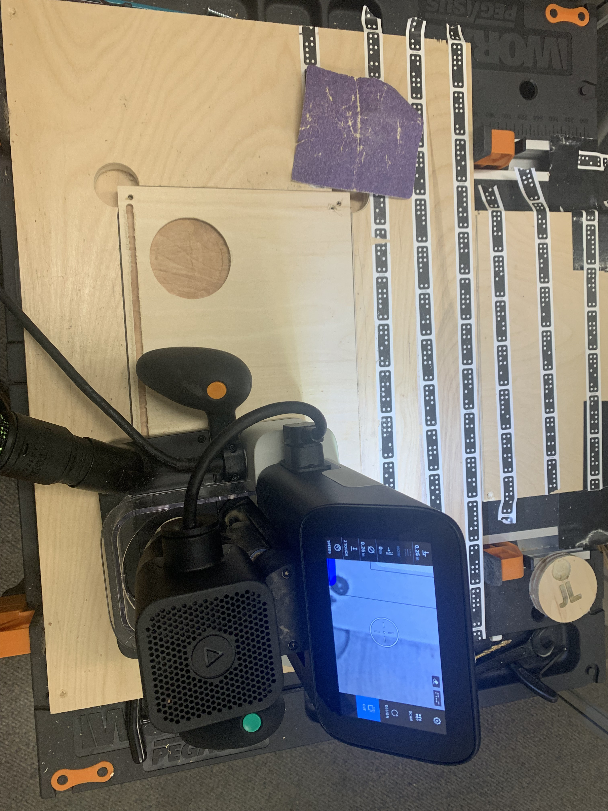

Week 5
This week was focused on designing a desk organizer using the shaper tool, carving a piece of wood, and engraving our initials!
1. Designing our desk organizer
First, opening Fusion360, we need to begin by creating a project file along with our master file where all of our information will be written on.

Now that we have our file all orginzed it is now time to begin making our sketch. First we need to press the "Create Sketch" button on the top left of the screen. From there we are greeted by this screen, we need to select the blue selected side. Once clicked we will change viewing angles.
This is the new view that we are given. From here we can do a number of things. We can create shapes, fillets, curves, etc. But first we need to create the outline of our organizer (Meaning the border) and we need to make sure that our measurements are in inches.
Selecting the solid rectangle tool we can begin by creating our border. Selecting the origin we can drag and select to a give point. From there were are prompted to choose the dimensions. For our purposes our dimensions will be 12.5 in Width and 8.50 in Height.

Now that we have our border we need to set our inner shape. Using the same tool we drag the shape from corner to corner leaving at least 0.25 between the edge and the inner shape.
Since we have our two inner and outer rectangles ourlineing our shape we need to fillet the corners of our inner rectangle. Choosing the fillet tool we can click on each corner of the inner rectangle which adds a curved edge. Since at first the curves are to dramatic we need to adjust them. Just as we did with the diameters we can do here. Click the grey text box we input 0.25in.

Because the instructions indicate that we need to have a circle with a diameter of 3inches we are going to start by including that first. Select the shape tool for circles and begin creating the circle. Again a grey tab will show up allowing you to directly input the dimeter you want. After you have inputed your diameter click the "Enter" Key and you are ready to move on.
Now that we have our required 3inch diameter circle we need to have another inner diameter circle in order to enure that we can separate the circle from the outer body. Just like the other tools we can prescribe a specific measurement using the grey box in inches. For our purposes we need to have a diameter of 2.25inch.

Moving on with my design I decided to copy and paste the above circle in order to have another place to fit a circular object for my desk, a cup, water bottle, or other items.

Now that I have an idea of what I want to add and utilize for my design I continue you add shapes and different configurations. As of now I have 2 circles and 4 squares. Later you will see how they came out. For my purposes I need to have these wide enough to fit the objects I want and for it to be designed properly for a pocket cut.
To add a little style I decided to add some fillets on the top two squares and It would allow me to use those pockets for different items or for a seperate organizer.
Now that I am done with my sketch It is time to solidify the sketch and move to render in order for us to get a better idea as to what final product would look like after stain and sand.
However, first, we need to create our bodies and make our depth with respect to our material. Selecting the outer boundry of the work area we can use our special tool to give it how tall we want it. For our purposes we need this body to be 0.75 inches in height. On the right after hitting the E key we can input these measurements and select the "New Body" option.
Dont be scared, this is normal. Since you created a new body we deselected our sketch. It isnt gone though.
Now that we have reselected our sketch we can start continuing with joining and creating our new bodies.
Moving onto the inner body we need to include this height to be 0.75 as well. Using the same method and options on the right-hand side we can input these options.
Since we have all the other bodies to be 0.75in we can now select all the inner depth pieces for our organizer and our items. For these pieces we need to have a depth of 0.25inch and since this is seperate from the body we need to use the join option on the right hnad side of the screen.
This is what this should look like. As you cna probably tell we still have inner diameter that is open. We will solve this in the next step.

Just like the other sections and bodies we need to select the inner diameter circle and input a depth of 0.75 and choose the "Join" option. Now that we are done creating the new bodies and setting the depth of our desk organizer we can move onto rendering in order to give us an idea of what our final product should look like!

Clicking the render tab we are transported to this page. Here we can choose what material we want this organizer to be along with applying different staining options to see what It wouldl look like if one were to go down that path.

Since we are not going to be keeping the outer body of the desk organizer we can go the bodies folder and deselect "Body 1". Now we will be able to see the final desk organizer.
We can now select an appearance where we can drag and drop a particular material in order to get a perspective as to what the final product will look like. For our purposes we should choose the closest to what our real life materials are.
Here is what your desk organizer should look like in the rendering stage.
Now that we are done with the render and our sketch and measurements are done we can begin to save and move on with the process. We need to save the file as a DTF file and convert it to an svg in order to pull it into illustrator.
Since we have saved it as a DTF file we need to convert it to a SVG. This website will do this task for us. Once converted we must open the svg file and start color coding our sections in illustrator.
Now in illustrator we can bring the shaper color code for different types of cuts for lines and pocket cuts. We can color code the strokes and fills of each of our shapes within illustrator.
Now that we have color coded our file in illustrator we can save again as an svg and send it to ourselves for the purposes of putting the file onto the shapers flashdrive.
2. Cutting with the shaper
The shape is a very complicated and powerful machine that uses extremely high powered drill bits to cut wood and or other materials using virtual space to guide the users cutting process. With that being said this means we must take extra care and safety measures to be able to use such a device. The images below will express and show us some of the prepatory steps we must take to ensure that the use of this machine is safe and goes well.
Here is our workspace. The empty space in the center is where our material will go. The checkers are the scanning points for our shaper to understand the space and scope as to where the shaper can and cannot go. Make sure to get familiar with your space before continueing.
This is our vaccume. This is a vital piece to ensure a safe utilization of the shaper. The vaccume is a powerful sucction tool that connects to the shaper to ensure that chunks or any flying debris during the cutting process does not fly out of the shaper and damage or harm anything in the vasinity. This must be turned on at all times prior to beginning your cut.
Here we have our shaper that actual machine used to cut our material. We see that we have a screen where we can design and change any aspects of our cut with the file that we have uploaded using the flashdrive provided.
These next few pictures are necessary tools to ensure that everything stays in place during and after we are cutting our material. This picture shows us our double sided tape that must be placed on the bottom of our material so that it is properly secured onto our workspace.
Here are more tools to change out our bits depending on the type of cut we would like to perform using the shaper.
These are drills and hammers to help us secure our material further to the workspace. If there are more than one piece to our cut we can also use these to build our final product.
This is the final step to ensure that our material is properly and safely adhered to the workspace. We can use screws to achieve this.
3. Begining to cut
To start the process, we need to take our file to our shaper via flashdrive. Once uploaded and the design has been uploaded properly to the shaper we can begin by scanning our workspace.
Once our workspace has been scanned the shaper now knows how far the shaper can cut without leaving our material. Since this is the case we can move and scale our design to fit within our material.
Now that we have our design placed and scaled to how we want it we can make sure that each shape and object within our design is selected to be the type of cut we would like. In addition once everything checks out we need to start our vaccume before starting to cut. Use Z-Touch to ensure that the drill knows where to top of the material is and ensure that you have the right drill bit for whatever shape you are beginning with cutting. It is now time to cut.
Here was my first cut. With a beginning depth of 0.25
Continuing with the process
I need to change my bit for a different type of cut.
Here is the bit changed.
Here was my final cut after the bit change
4. The Final Product
Here is my final product, sanded to the best of my ability with the objects that I designed my desk organizer for. However, Unfortunately, I was not unable to correctly cut some of my wholes and therefore some of the objects that I was meaning to fit did not fit.
{kind=link}